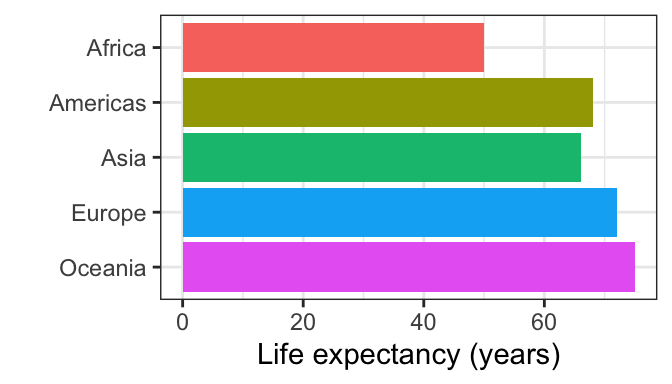

library(tidyverse)── Attaching core tidyverse packages ──────────────────────── tidyverse 2.0.0 ──
✔ dplyr 1.2.1 ✔ readr 2.2.0
✔ forcats 1.0.1 ✔ stringr 1.6.0
✔ ggplot2 4.0.3 ✔ tibble 3.3.1
✔ lubridate 1.9.5 ✔ tidyr 1.3.2
✔ purrr 1.2.2
── Conflicts ────────────────────────────────────────── tidyverse_conflicts() ──
✖ dplyr::filter() masks stats::filter()
✖ dplyr::lag() masks stats::lag()
ℹ Use the conflicted package (<http://conflicted.r-lib.org/>) to force all conflicts to become errorslife_exp <- read.csv("./data/graph_data_life_exp.csv")ggplot(life_exp, aes(x = fct_rev(country), y = life_exp, fill = country)) +
geom_col() +
theme_bw() +
labs(x = "", y = "Life expectancy (years)") +
coord_flip() +
theme(legend.position = "none")
| Version | Author | Date |
|---|---|---|
| f2835df | maggiedouglas | 2026-02-14 |
sessionInfo()R version 4.6.0 (2026-04-24)
Platform: x86_64-apple-darwin20
Running under: macOS Ventura 13.7.8
Matrix products: default
BLAS: /Library/Frameworks/R.framework/Versions/4.6-x86_64/Resources/lib/libRblas.0.dylib
LAPACK: /Library/Frameworks/R.framework/Versions/4.6-x86_64/Resources/lib/libRlapack.dylib; LAPACK version 3.12.1
locale:
[1] en_US.UTF-8/en_US.UTF-8/en_US.UTF-8/C/en_US.UTF-8/en_US.UTF-8
time zone: America/New_York
tzcode source: internal
attached base packages:
[1] stats graphics grDevices utils datasets methods base
other attached packages:
[1] lubridate_1.9.5 forcats_1.0.1 stringr_1.6.0 dplyr_1.2.1
[5] purrr_1.2.2 readr_2.2.0 tidyr_1.3.2 tibble_3.3.1
[9] ggplot2_4.0.3 tidyverse_2.0.0 workflowr_1.7.2
loaded via a namespace (and not attached):
[1] sass_0.4.10 generics_0.1.4 stringi_1.8.7 hms_1.1.4
[5] digest_0.6.39 magrittr_2.0.5 timechange_0.4.0 evaluate_1.0.5
[9] grid_4.6.0 RColorBrewer_1.1-3 fastmap_1.2.0 rprojroot_2.1.1
[13] jsonlite_2.0.0 processx_3.9.0 whisker_0.4.1 promises_1.5.0
[17] httr_1.4.8 scales_1.4.0 jquerylib_0.1.4 cli_3.6.6
[21] rlang_1.2.0 withr_3.0.3 cachem_1.1.0 yaml_2.3.12
[25] otel_0.2.0 tools_4.6.0 tzdb_0.5.0 httpuv_1.6.17
[29] vctrs_0.7.3 R6_2.6.1 lifecycle_1.0.5 git2r_0.36.2
[33] fs_2.1.0 pkgconfig_2.0.3 callr_3.7.6 pillar_1.11.1
[37] bslib_0.11.0 later_1.4.8 gtable_0.3.6 glue_1.8.1
[41] Rcpp_1.1.1-1.1 xfun_0.59 tidyselect_1.2.1 rstudioapi_0.19.0
[45] knitr_1.51 farver_2.1.2 htmltools_0.5.9 labeling_0.4.3
[49] rmarkdown_2.31 compiler_4.6.0 getPass_0.2-4 S7_0.2.2